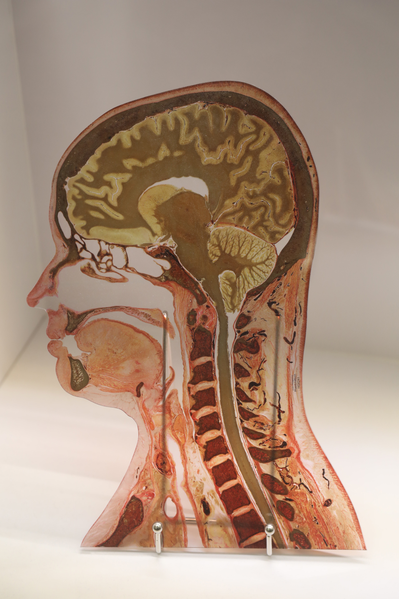
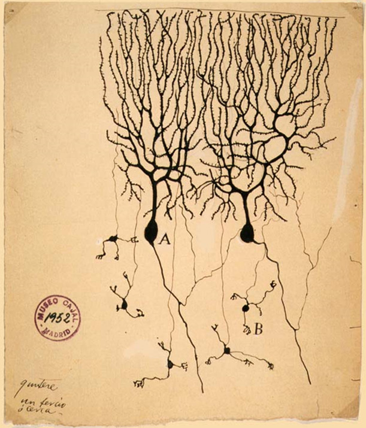

神经调节的结构基础
本期导读
中枢与外周 · 自主神经 · 神经元

视频原话 · 导读3 句
- 同学们好！这节课梳理人教版选择性必修一第二章第一节——神经调节的结构基础。8.2s
- 这一节高考常考脑的结构与功能定位、自主神经系统，以及神经元的结构。7.1s
- 我们按七个考点梳理，每个考点都讲清楚怎么考、怎么做。5.6s
中枢神经系统01#
| 结构 | 功能 |
|---|---|
| 大脑皮层 | 调节机体活动的最高级中枢 |
| 小脑 | 协调运动，维持身体平衡 |
| 脑干 | 呼吸、心脏功能的基本活动中枢 |
| 下丘脑 | 体温、水平衡调节中枢；与生物节律有关 |
| 脊髓 | 脑与躯干、内脏的联系通路；低级中枢 |
考法
醉酒走路不稳 → 小脑；呼吸、心跳停止 → 脑干；体温、水盐失衡 → 下丘脑
视频原话7 句
- 考点一，中枢神经系统，包括脑和脊髓。脑又包括大脑、小脑、脑干和下丘脑等。8.8s
- 大脑表面是大脑皮层，是调节机体活动的最高级中枢。5.4s
- 小脑位于大脑的后下方，能够协调运动、维持身体平衡。5.6s
- 脑干连接脊髓和脑的其他部分，有许多维持生命的必要中枢，比如调节呼吸和心脏功能的基本活动中枢。9.6s
- {下丘脑|brown}有{体温调节中枢|brown}和{水平衡调节中枢|brown}，还与生物节律的控制有关。7.1s
- 脊髓是脑与躯干、内脏之间的联系通路，是调节运动的低级中枢。6.3s
- 考法：根据症状定位。喝醉后走路不稳，是小脑受影响；呼吸、心跳停止，是脑干受损；体温、水盐失衡，看{下丘脑|brown}。12.5s
外周神经系统02#
按解剖位置
- 神经系统
- 中枢神经系统
- 脑
- 脊髓
- 外周神经系统
- 脑神经12 对 · 头面部
- 脊神经31 对 · 躯干、四肢
- 中枢神经系统
按功能
- 外周神经
- 传入神经感觉神经
- 传出神经运动神经
- 躯体运动神经支配躯体运动
- 内脏运动神经= 自主神经系统
注意：脑神经和脊神经中，都有支配内脏器官的神经
易错
脑神经和脊神经都属于外周神经系统，不属于中枢神经系统。
视频原话6 句
- 考点二，外周神经系统。3.0s
- 按解剖位置，外周神经系统包括与脑相连的脑神经，共12对，主要分布在头面部；以及与脊髓相连的脊神经，共31对，主要分布在躯干和四肢。14.0s
- 注意，脑神经和脊神经中，都有支配内脏器官的神经。5.3s
- 按功能，外周神经分为传入神经，也叫感觉神经；以及传出神经，也叫运动神经。8.2s
- 传出神经又分为支配躯体运动的躯体运动神经，和支配内脏、血管、腺体的内脏运动神经。8.9s
- 易错：脑神经和脊神经都属于外周神经系统，不属于中枢神经系统。6.9s
自主神经系统03#
支配对象
内脏、血管和腺体
性质
传出神经
特点
活动不受意识支配
组成：
交感神经
+
副交感神经
易错
自主神经系统只包括传出神经，不包括传入神经；活动不受意识支配——无法随意让心跳变慢。
视频原话3 句
- 考点三，自主神经系统。支配内脏、血管和腺体的传出神经，它们的活动不受意识支配，称为自主神经系统。11.0s
- 它由交感神经和副交感神经两部分组成。4.2s
- 易错：自主神经系统只包括传出神经，不包括传入神经；它的活动不受意识支配，所以我们无法随意让心跳变慢。11.3s
交感与副交感神经04#
对同一器官的作用通常相反
| 器官 | 交感神经 | 副交感神经 |
|---|---|---|
| 瞳孔 | 扩张 | 收缩 |
| 心跳 | 加快 | 减慢 |
| 支气管 | 扩张 | 收缩 |
| 胃肠蠕动 | 减弱 | 加强 |
兴奋状态 → 交感神经活动占优势
安静状态 → 副交感神经活动占优势
有利于食物的消化和营养物质的吸收
有利于食物的消化和营养物质的吸收
意义：使机体对外界刺激作出更精确的反应，更好地适应环境变化
考法
考试紧张：心跳加快、食欲下降 → 交感神经占优势；饭后安静休息、利于消化 → 副交感神经占优势
视频原话5 句
- 考点四，交感神经和副交感神经对同一器官的作用，通常是相反的。6.8s
- 交感神经使瞳孔扩张、心跳加快、支气管扩张，胃肠蠕动减弱；副交感神经则使瞳孔收缩、心跳减慢、支气管收缩，胃肠蠕动加强。13.4s
- 人处于兴奋状态时，交感神经活动占优势；处于安静状态时，副交感神经活动占优势，有利于食物的消化和营养物质的吸收。12.0s
- 这样的双重支配，可以使机体对外界刺激作出更精确的反应，更好地适应环境的变化。7.9s
- 考法：考试时紧张，心跳加快、食欲下降，是交感神经活动占优势；饭后安静休息，有利于消化，是副交感神经活动占优势。12.6s
神经元的结构05#

树突：短而粗、数量多，接受信息传向细胞体
轴突：长而较细，将信息传向其他神经元、肌肉或腺体
视频原话6 句
- 考点五，神经元。神经元是神经系统结构与功能的基本单位，由细胞体、树突和轴突等部分构成。10.1s
- 树突通常短而粗，数量多，用来接受信息并将其传导到细胞体。6.7s
- 右边是西班牙科学家卡哈尔手绘的小脑浦肯野细胞，可以看到大量分支状的树突。7.5s
- 轴突长而较细，将信息从细胞体传向其他神经元、肌肉或腺体。6.7s
- 树突和轴突末端的细小分支，叫作神经末梢。4.7s
- 考法：信息在一个神经元内的传递方向，一般是树突→细胞体→轴突。7.3s
神经胶质细胞06#
神经胶质细胞数量是神经元的 10～50 倍
支持
保护
营养
修复
外周神经系统中，参与构成神经纤维表面的髓鞘
视频原话2 句
- 考点六，神经胶质细胞。它广泛分布于神经元之间，数量是神经元的10～50倍。8.2s
- 神经胶质细胞对神经元起辅助作用，具有支持、保护、营养和修复神经元等多种功能。在外周神经系统中，它还参与构成神经纤维表面的髓鞘。14.2s
神经纤维与神经07#
神经纤维 = 轴突 + 髓鞘
神经 = 许多神经纤维集结成束 + 包膜
易错
神经元 → 神经纤维 → 神经是三个层次：一个神经元一般只有一条轴突，一条神经里有许多条神经纤维。
视频原话3 句
- 考点七，神经纤维与神经的区别。轴突呈纤维状，外表大都套有一层髓鞘，构成神经纤维。9.6s
- 许多神经纤维集结成束，外面包有一层包膜，就构成一条神经。6.4s
- 易错：神经元、神经纤维、神经是三个层次。一个神经元一般只有一条轴突，而一条神经里有许多条神经纤维。11.2s
易错速查✓
先自己判断，再点按钮查看对错与解析。
- 1脑神经和脊神经属于中枢神经系统说法错误：属于外周神经系统
- 2自主神经系统包括传入神经和传出神经说法错误：只包括传出神经
- 3交感神经兴奋使胃肠蠕动加强说法错误：交感神经使胃肠蠕动减弱
- 4呼吸中枢位于脑干说法正确。
- 5神经胶质细胞的数量比神经元少说法错误：是神经元的10～50倍
- 6神经元是神经系统结构与功能的基本单位说法正确。
分清层次和功能，这一节稳稳拿分！
视频原话 · 易错速查5 句
- 最后，用六道判断题检验一下。3.6s
- 脑神经和脊神经属于中枢神经系统？错，属于外周神经系统。自主神经系统包括传入神经和传出神经？错，只包括传出神经。13.6s
- 交感神经兴奋使胃肠蠕动加强？错，是减弱。呼吸中枢位于脑干？对。8.7s
- 神经胶质细胞的数量比神经元少？错，是神经元的十到五十倍。神经元是神经系统结构与功能的基本单位？对。11.9s
- 七个考点串起来：先分清中枢和外周，再掌握自主神经的双重支配，最后认识神经元和神经胶质细胞。掌握这些，这一节就能稳稳拿分！我们下期再见！14.8s
图片来源
图片来源：Wikimedia Commons —— Caldwbr《Sagittal brain slice, UB Museum of Neuroanatomy, Buffalo, New York》CC BY-SA 4.0；Santiago Ramón y Cajal《Purkinje cell》公有领域
Photo: Caldwbr, CC BY-SA 4.0